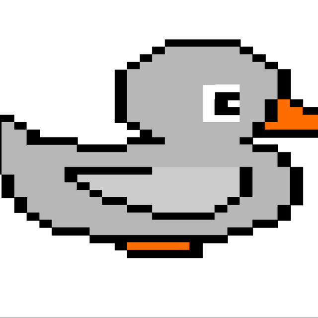

Road & trail racing
5Ks through marathons, plus the trail races that quietly take twice as long as you budgeted for.
▮ Duck, duck, grey duck
Christian and Lauren cover Midwest endurance events — road races, trail races, gravel rides, long hikes, and everything that goes sideways in between. No pro splits. No pretending. Just two people who keep signing up anyway.

EST. IN THE MIDWEST
01 — LISTEN
The player pulls straight from Spotify, so the newest episode is always on top. Hit play — no app required.
02 — ABOUT
Grey Duck Running started the way most Midwest hobbies do: someone signed up for something too long, and someone else agreed to come along. Now it's a recap of the races, rides, and routes across the Upper Midwest — plus the entry fees, the parking situation, the aid-station snacks, and whether the shirt was actually any good.
If you're chasing a Boston qualifier, there are better shows. If you're chasing a finish line, a beer afterward, and a decent story to tell about it — you're in the right place.
Will talk you into a race one distance further than you planned.
Keeper of the logistics, and the reason anyone gets to the start line.
03 — COVERAGE
Midwest endurance, broadly defined. If it takes a few hours and leaves you sore, it's fair game.
5Ks through marathons, plus the trail races that quietly take twice as long as you budgeted for.
Gravel grinders, long point-to-points, and the ever-expanding calendar of "it's only 100 miles."
State parks, the Ice Age Trail, the North Shore — the routes worth a full Saturday.
What the course is actually like, what to expect at the expo, and whether it's worth the drive.